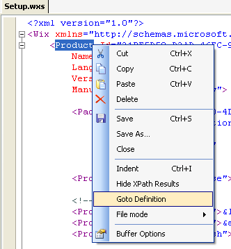
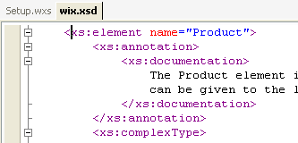
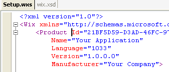
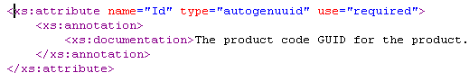
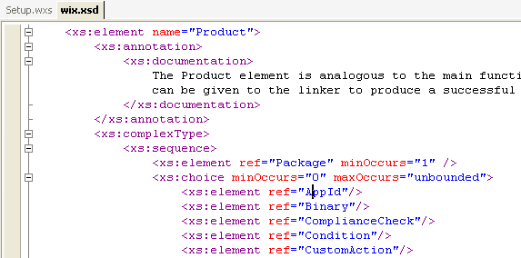
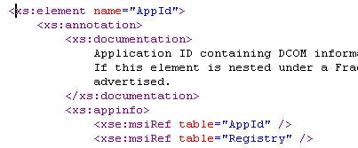
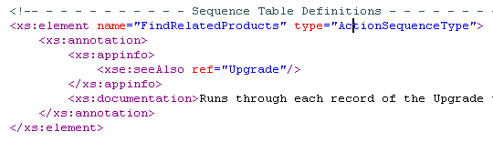
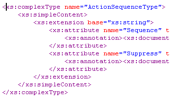
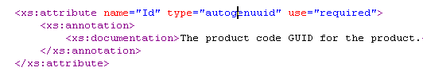
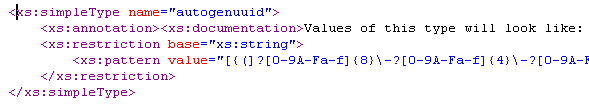

The XML Editor in SharpDevelop 2.1 now has Go To XML Schema Definition support. Open an XML document that uses a schema into SharpDevelop, move the cursor to the element or attribute, then either right click and select the menu option Goto Definition or press Ctrl+Enter. The schema will then be opened and the cursor will be positioned on the matching element or attribute definition.
Move the cursor so it is on the element name inside its starting tag. Right click and select Goto Definition or press Ctrl+Enter.

The schema will then be opened and the cursor moved to the element definition.

Move the cursor so it is inside or next to an attribute.

Go to definition takes you to the attribute definition.

Inside the schema itself, move the cursor inside the ref attribute's value.

Go to definition takes you to the referenced element.

Similarly you can click inside the ref attribute value for the elements xs:group, xs:attributeGroup, and xs:attribute, and go to their corresponding definitions.
Inside the schema, move the cursor inside the type attribute's value.

Go to definition takes you to the corresponding complex type.

Inside the schema again, move the cursor inside the type attribute's value.

Go to definition takes you to the type definition.

Used in conjunction with the new Navigate Back and Navigate Forward toolbar buttons, added by David Alpert, you can quickly jump back and forth around the schema.
It only works with schemas that SharpDevelop is aware of. These can configured by selecting Options from the Tools menu, then selecting the Text Editor category and then XML Schemas.
SharpDevelop does not currently pick up any changes made to a schema without being restarted.